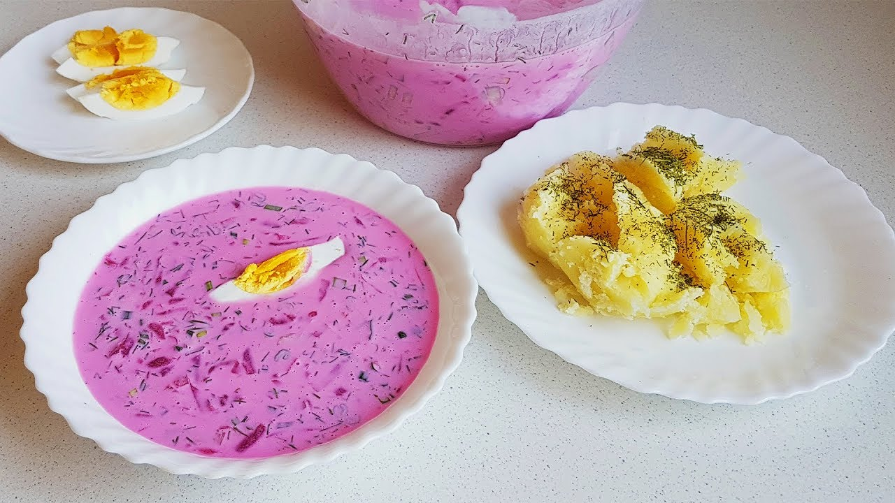

Cold Beet Soup

Description
You will experience the real taste of Lithuania cuisine if you taste this easy-to-cook soup, especially popular
in Lithuania - „šaltibarčiai“ (cold beetroot soup, pink soup)! The soup has a shocking bright pink color due to
the natural beetroot juice and an incredibly fresh taste due to the most important ingredient in the cold soup
- kefir, recognized by nutritionists as one of the healthiest products in the world.
Carlo Petrini, an Italian founder and leader of the famous Slow Food movement, has called Lithuanian
cold beetroot soup „the world's most aesthetic cold soup“.
Ingredients
- Beetroots, boiled or marinated, 500 g
- Cucumbers, 200 g
- Dill, 20 g
- Green onions, 30 g
- Kefir, 1 l
- Milk, 200 ml
- Boiled eggs, 2 pcs.
- Sour cream, 100 ml
Steps
- Finely chop the dill and the green onions;
- Cut an unpeeled cucumber into small cubes;
- Grate the boiled or marinated beetroots into the pot together with the greens;
- Add salt and sour cream, pour in the kefir and mix everything together;
- Chop up the boiled eggs and add to the soup;
- Water the soup down with milk, squeeze in some lemon juice if you like it sour;
- Serve the Cold Pink Soup with boiled or fried potatoes sprinkled with dill.